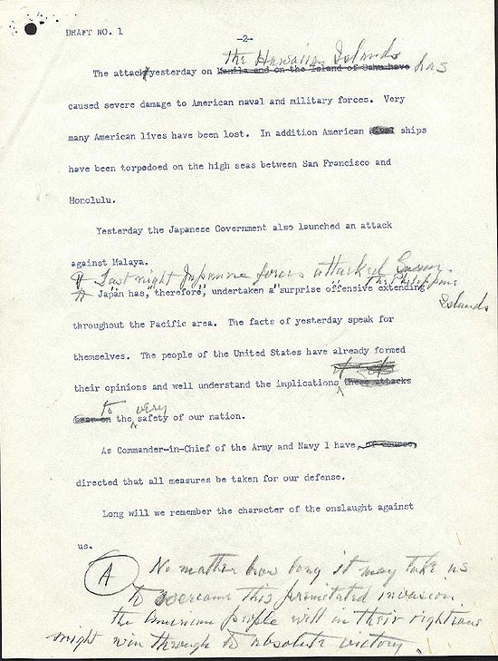

Franklin D. Roosevelt was the Member of the New York State Senate for the 26th district from January 1, 1911 to March 17, 1913. Then he became the Assistant Secretary of the Navy from March 17, 1913 to August 26, 1920. He later became the 44th Governer of New York from January 1, 1929 to December 31, 1932. Finally he became the 32nd President from March 4, 1933 to April 12, 1945. He was the only President to serve 4 terms.
 The Day of Infamy Speech Draft by Franklin D. Roosevelt.